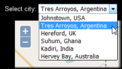
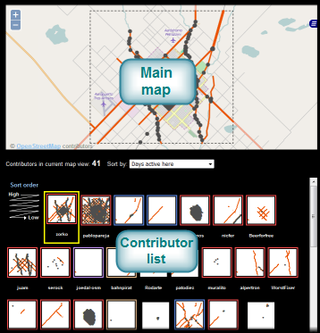
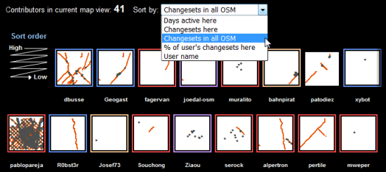
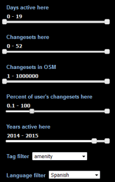
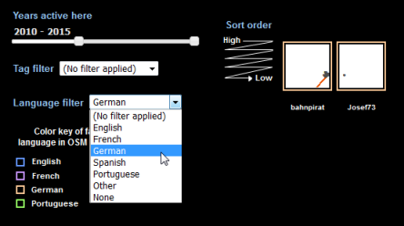
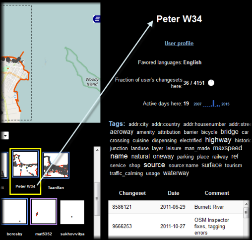
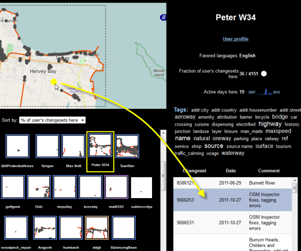

OpenStreetMap is a "crowdsourced" geographic database built by volunteers on the Internet. Crowd Lens is a tool for learning who built OpenStreetMap in a particular place. It lets you explore subsets of the crowd, or view detailed information about any one particular contributor. Crowd Lens can help you answer questions such as:
To get started with Crowd Lens, select a city from the top dropdown menu.
You'll notice a big map appear and a bunch of small maps below it. These small maps constitute a contributor list, representing the work of each OpenStreetMap contributor that edited this city. You can use this list of maps to distinguish between systematic and casual contributors.
To discover the most active contributors, you can sort this contributor list by certain characteristics such as number of days active in the project, or number of changesets in the entire OpenStreetMap project. The sorting occurs from top to bottom, left to right.
Use the filters on the left side of the screen to learn about the characteristics of the crowd that built OpenStreetMap in this city. The filters consist of range sliders and dropdown lists that narrow down the contributor list to just those contributors who meet certain criteria, such as contributors who used a certain tag or who edited the map in a particular year.
One of the filters allows you to select contributors who favored a particular language in their OpenStreetMap changeset comments. Note that this language is the one most commonly used by the contributor in the OSM project as a whole, not the city alone.
The main map in the center of the screen is also a filter; panning and zooming narrows down the contributor list to show you only the contributors who influenced the current map view. This is a great way to see who built OpenStreetMap in a particular neighborhood.
Click any contributor's little map to see further details in the right hand panel describing that contributor's work in OpenStreetMap. This includes the tags used by the contributor and the dates and comments associated with each changeset submitted by the contributor.
The map at the top of the screen displays the OpenStreetMap nodes and ways submitted by the contributor. Click any node or way to see its associated changeset highlighted in the table.
Click any row in the changeset table to see the changeset highlighted on the map.
You can access the above information at any time by clicking the Help link at the top of Crowd Lens.